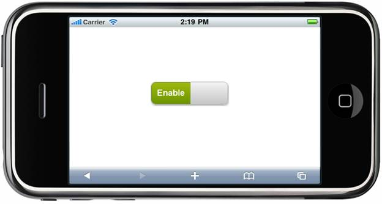
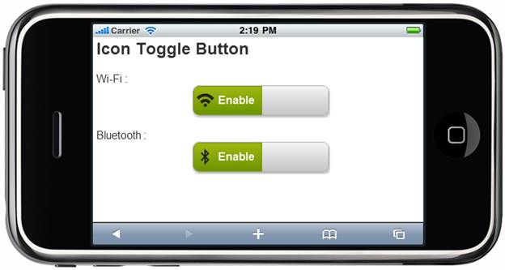

In the Getting Started section, we discussed how to create a Mobile MVC application and add the Tools package to an application. This section guides you to add the ToggleButton control to an application.
1. In the view, invoke the ToggleButton helper with the toggle button ID as the first argument.
|
[ASPX]
[Razor]
@{
|
2. Run the application.
The output is shown in the following screenshot:

Figure 163: ToggleButton—Sample
A sample that demonstrates a basic ToggleButton control can be downloaded from the following links:
 Note: The version number for the assemblies has
been set to 10.104.0.44 in the Web.config file of the attached sample. Change
the version number to the appropriate version in the Web-2008.config or
Web-2010.config files (available in the root directory) and they will
automatically be updated in the Web.config file.
Note: The version number for the assemblies has
been set to 10.104.0.44 in the Web.config file of the attached sample. Change
the version number to the appropriate version in the Web-2008.config or
Web-2010.config files (available in the root directory) and they will
automatically be updated in the Web.config file.
Use Case Scenario
The ToggleButton control can be used to toggle connections such as Wi-Fi or Bluetooth between “On” and “Off.”

Figure 164: ToogleButton Control used to Set Wi-Fi and Bluetooth Connections